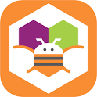
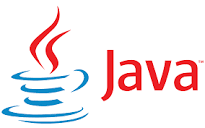

LABORATORIO DE APLICACIONES
Este taller lo arranque a cursar en quinto año, de ese año recuerdo haber visto programacion con neatbeans con el profesor Javier Barcenilla. Me acuerdo ver while, do while, for, else e if, entre otros.
En sexto año tuve al profesor Marcelo Rivera y en este caso vimos la creacion de aplicaciones para celulares, mas que nada juegos, donde las creamos y programamos con la pagina web AppInventor y realizamos aplicaciones como un TA-TE-TI, el juego de atrapar con la canasta y el juego de Memorizar la imagen.

